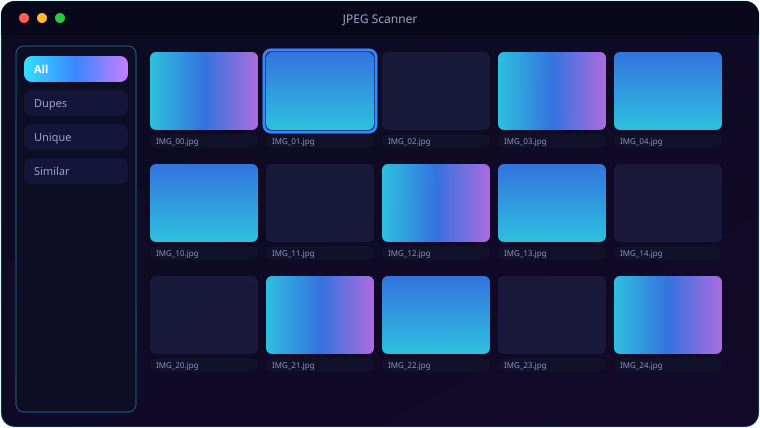

A look inside JPEG Scanner.

Everything JPEG Scanner brings to the table.
Exact + Perceptual Matching
SHA-256 catches byte-identical copies; optional perceptual hashing catches resized and re-saved look-alikes.
Lazy-Loading Grid
Browse thousands of thumbnails in a smooth, lazy-loading grid that doesn't choke on big libraries.
Side-by-Side Compare
Open a compare dialog to judge two images before you decide which copy to keep.
Recycle-Bin Safe
Deletes go to the Recycle Bin via send2trash — nothing is ever permanently destroyed.
Incremental Scans
A SQLite cache skips files whose path, size and mtime are unchanged, so re-scans fly.
Smart Filters
All / Duplicates / Unique / Similar Groups, with drive selection before each scan.
System requirements.
Minimum
- OS: Windows 10 (64-bit) or Windows 11
- CPU: Dual-core, 2.0 GHz
- Memory: 4 GB RAM
- Graphics: Any DirectX 11 / integrated GPU
- Storage: 250 MB + space for your files
- Display: 1280×768 or higher
Recommended
- OS: Windows 11 (64-bit)
- CPU: Quad-core, 3.0 GHz
- Memory: 8 GB RAM
- Graphics: Dedicated GPU (optional)
- Storage: SSD with a few GB free
- Display: 1920×1080 or higher
Scanning very large libraries across many drives benefits from more RAM and an SSD for the thumbnail cache.
The details.
| Detection | SHA-256 exact + imagehash perceptual |
| Extensions | .jpg .jpeg .jfif .jpe |
| Deletes | Recycle Bin via send2trash (no permanent delete) |
| Cache | SQLite at ~/.jpegscanner, incremental re-scans |
| Filters | All · Duplicates · Unique · Similar Groups |
| Platform | Windows 10 / 11 |
Get JPEG Scanner.
Find and clear duplicate JPEGs across every drive.
⬇ Download JPEG ScannerJPEG_Scanner_Setup.exe · free · Windows 10/11